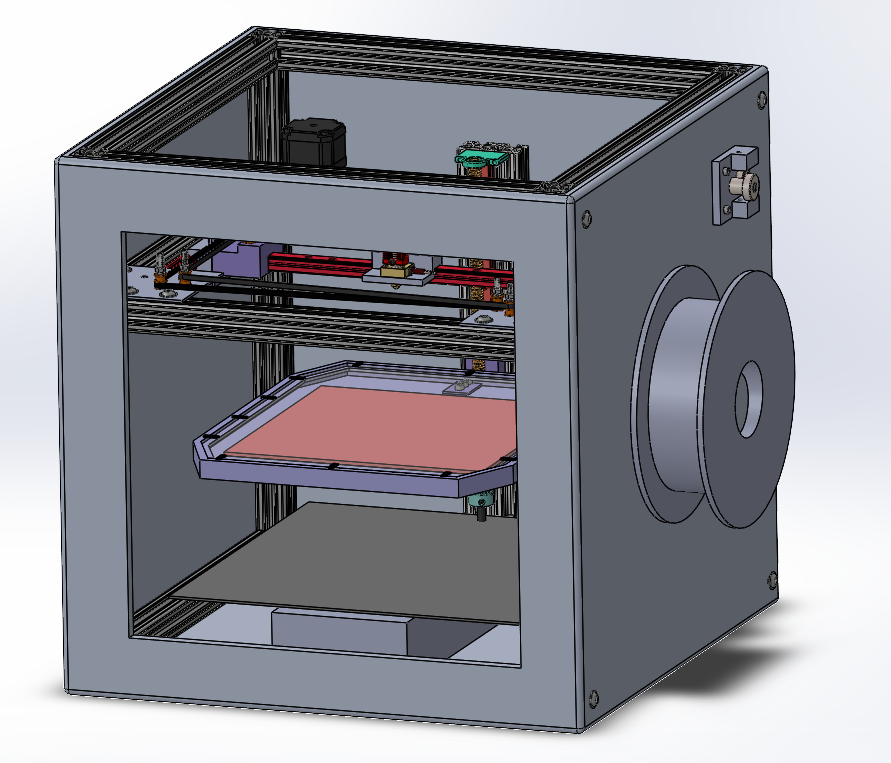
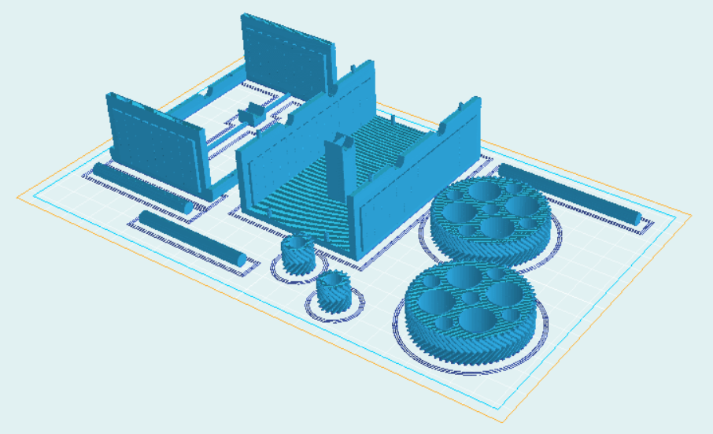
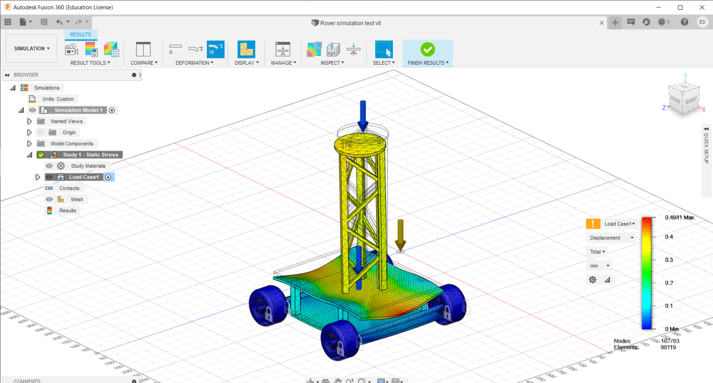

By Emma Day
My name is Emma Day and I am a mechanical engineering student at the university of Toronto,
I have a passion for engineering and I show it through my work, I strive to create and design for constantly changing world that we live in,
learning about engineering design process has allow me to get a better hold on the process used to create, develop and make ideas and products.
I see engineering design as the iteration and development of products to ensure they fit the specifications and scope of the project,
with design being a plan or specification of a project. The design process is the process of idea generation, creation and planning of a design,
this process is repeated many times to converge toward a design that fits the specifications. These processes help engineers to create safe,
functional and innovative products while guiding them toward more efficient designs.
The world is constantly changing and we need to work together if we want to have an impact, teamwork in engineering is a crucial element.
The vast majority of products are not designed by one person, so learning how to communicate and translate your ideas to other people is an incredibly useful skill.
I regularly revise my communication skills to ensure everyone understands my ideas. I always drive teams forward and make sure that everyone is involved,
especially crucial in situations where others are developing their confidence. During the transition to online meetings I continued to encourage everyone to speak up,
checking up and elaborating on the ideas of quitter classmates, making sure they were not just a name on the screen.
I expand my web of knowledge every day by keeping with up the news, recent innovations in technology and studying the change of technology throughout history.
I aspire to be at the forefront of new technology that will help to change the world, which is why I want to take the mechatronics,
and the energy and environment stream, along with a minor in AI. These areas of study are becoming increasingly intertwined with society.
I plan enter a career at Tesla, Spacex, Boston Dynamics, Rolls Royce, GE or bombardier to work with the leading minds in these fields,
challenging me to aim for higher.
Throughout this project we have goes through candidate designs and reiterated to make sure the 3D printer fits our specifications and delivers the best results, continually learning about the new processes in 3D printing and looking further into how the mechanisms and electronics work together as I have an interest in mechatronics. I created a fair amount of the CAD in the model shown below and communicated with my teammates as often as I could to ensure all members were on the same track and agreed with any design changes.

One the latest projects was to design a co-linear gearbox that can step down a to a minimum ratio of 12:1, Our team made a CAD model of the co-linear gearbox given to us, then we created a new design that reducing the speed by a factor of 16. Once the 2nd design was completed it was converted it to a 3D model, in order to adhere to time and print constraints we had to iterate on the gearboxes design and size. Communication as a team was key in this project as designing a 3D model that will be printed and assembled by someone else, gave us a glimpse into working as engineers ensuring that we were able to convey our ideas and designs. Reflections like TELS allow me to gauge my ability to communicate effectively to my teammates and show me where I need to improve so I can become a more well rounded engineer.

This is an earlier version of the chassis our team designed for the University of Toronto Autonomous Rover team, shown is a displacement testing simulation in fusion 360. I used this experience to dive into the world of mechanical simulations, it’s uses and applications in design and testing of products, I continually track my growth through my work and reflected on what skills I need to develop for the future, in addition keeping on top of the developments in CAD software and the industry standards. Giving me an edge and furthering my goals towards working with companies at the forefront of innovation.
